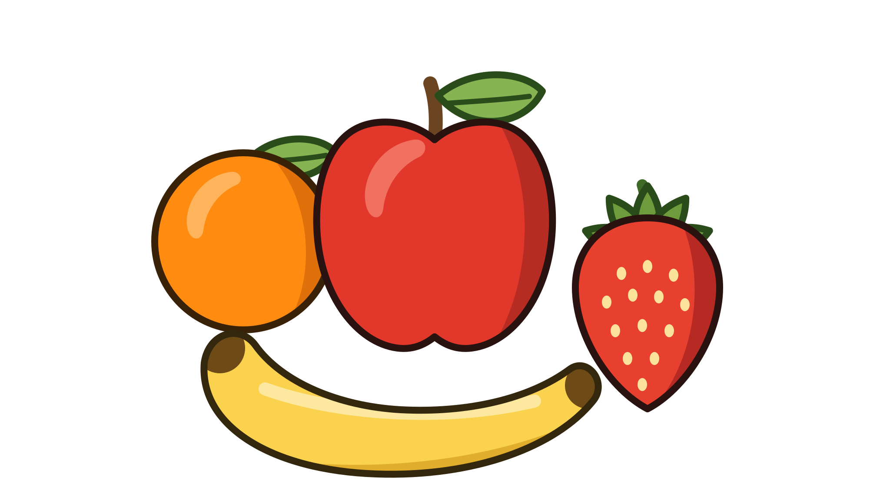
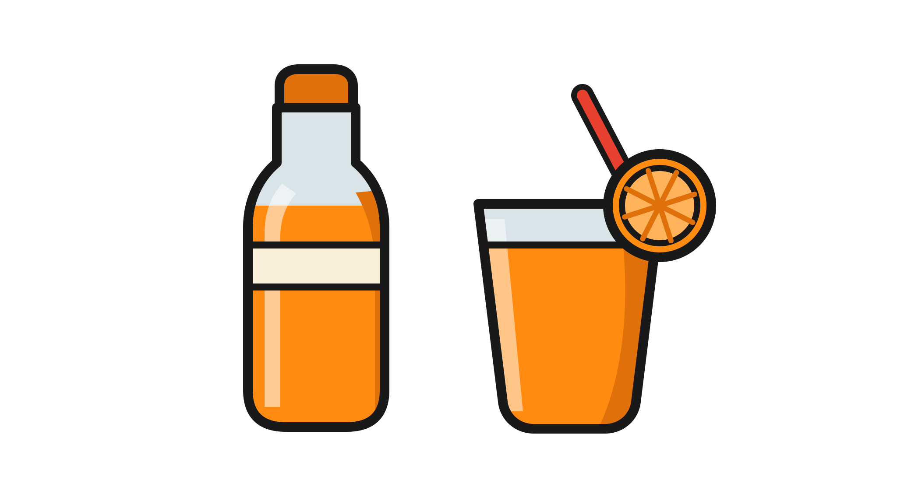

Illustrations de catégorie recomposées à partir des tracés vectoriels d'origine extraits de Figma : le style est exact, seul le cadrage change. Fond #444444, identique à Figma.
#444444
Redessinées à la main faute d'élément d'origine correspondant. Elles lisent comme des icônes plates, pas comme les illustrations Mezze — à reprendre.

